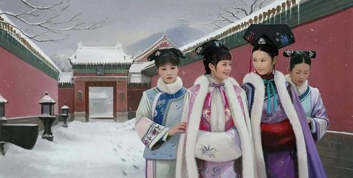

恍惚中，还是在初入宫的仲春，杏花飞扬如轻红的雨雾，“他”穿花度柳而来，长身玉立，丰神朗朗，只目光炯炯地打量我，道：“我是……果郡王。” 原来，一开始，便是错的。

流潋紫历时十年创作了《后宫·甄嬛传》，让无数的甄迷为之疯狂。 郑晓龙导演的电视剧《后宫·甄嬛传》，打造了清古装剧*之作。 陈柏言三年心血倾注成《后宫甄嬛传>大画集》，呈上绝美的视觉盛宴。这里有精致的全彩美图经典场景再现，也有唯美的限量明信片，还有精美海报随书赠送……三年经典，豪华珍藏。
流潋紫说： 原来，我写了那么久的故事，不过只是写了一个“情”字，百般勘不破。 原来，问尽天下女心，不过是一句：愿得一心人，白头不相离。
看了《后宫·甄嬛传》画集的样书，这是柏言真正的用心之作，很精美，当时那幅《雪山茶》，好多《后宫·甄嬛传》迷都很喜欢。画集中每一幅作品，都很用心。特别是把甄嬛刻画得非常传神。希望柏言能够创作出更经典的作品。
柏言是醉心于艺术之人，对古风小说甚有自己的见解，生活中便是对一花一草，也有独到的美趣。他对《后宫·甄嬛传》中的人物格外喜欢，画了不少美图，其风情韵致，既有电视剧中人物的韵味，又有小说中的浪漫，于是《〈后宫·甄嬛传〉大画集》的雏形便成了。
感谢柏言，让我们在文字与影像之外，看到一个不同的《后宫·甄嬛传》，感受一个用心者的美好。
Tags: 设计
转载:感谢您对夏锡淼个人书城的认可，虽然做的很丑，但是是我一行一行敲下来滴，转载就算了，太丑了，谢谢哈哈哈哈哈
上一篇：飞花令里读诗词
下一篇：愿为你赴一场前路不明的旅途